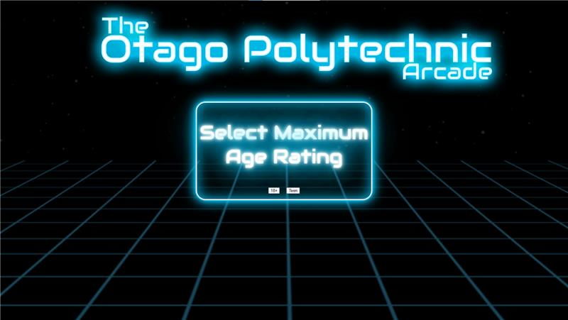
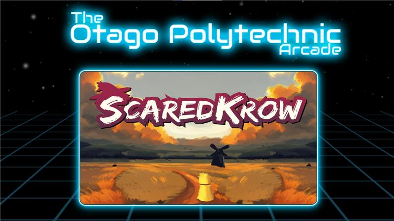
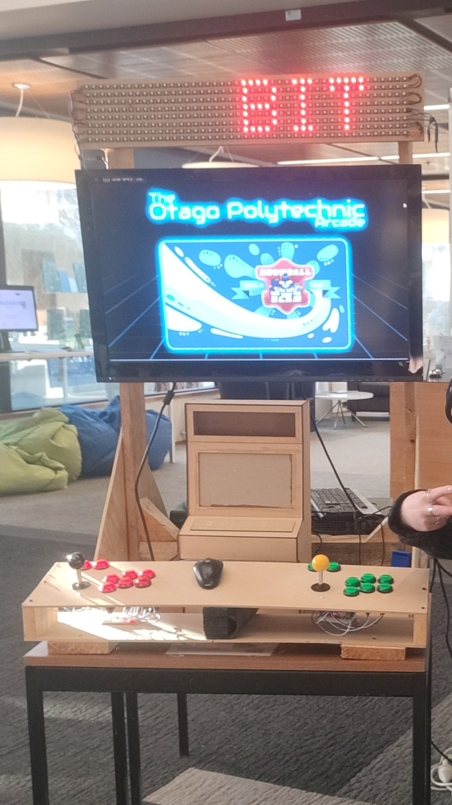

Projects
-
Cloudy with a Chance of Lora (Weather Station)
In this project, we built a small weather station to be installed on the roof of Otago Polytechnic, aimed at providing valuable data for Dunedinites. This experience allowed me to utilize my skills in embedded systems and web development.
- Next.js: We chose to use Next.js for our full-stack application, enabling us to create an API without Express. This was a new opportunity for me to deepen my understanding of full-stack development.
- LoRa: We utilized LoRa technology to transmit our data to The Things Network. This was my first experience sending data from an Arduino for IoT applications.
- The Things Network (TTN): Our LoRa data was sent to TTN, allowing us to pull it back down to our API. Until this project, I hadn’t worked with webhooks before, which was a valuable learning opportunity.
- 3D Modeling: Alongside this project we have provided support to another project that displays c02 levels in the classroom i have been involved in this proccess by building new sensors and designing and printing cases for them.


-
Rainy Arcade
In this project we built a modern arcade prototype for use in game jams and for the Games Students
- Backend: The big learning development for me working on this backend for me was learning to use the child processs node library for executing commands used mainly for loading the games aswell as using programtic approaches to maintain only one game being loaded and that they load correctly
- 3D Modeling: I designed and modeled an arcade cabinet to meet the requirements of our stakeholder. I then had to learn how to make construction drawings which were then supplied to the Carpenters at the Polytechs engineering school.
  

-
C02 Monitoring
This is a small project being done along side the weather station in conjunction witha diffrent team of developers
- Hardware: Revised the original design to enhance modularity and repairability. The initial design faced issues with fraying wires and failing CO2 sensors. To address this, I implemented header pins on the circuit board and used jumper cables, making it easier for team members to perform repairs without extensive hardware knowledge.
- Arduino Programing: I programmed the arduino feathers to read the C02 sensor. Then we send the data off to The Things Network using TinyLora module.